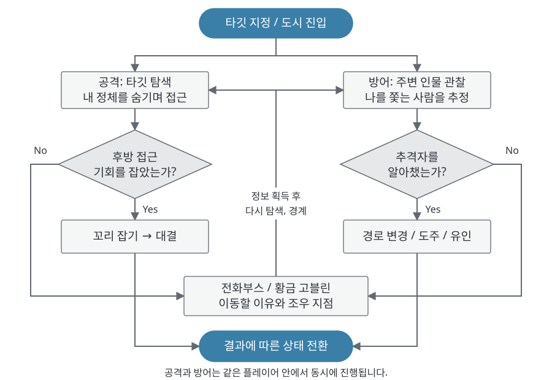

1.1 게임 개요
● 핵심 한 줄
- 타깃에게는 내 정체를 숨기고, 나를 쫓는 추격자의 단서는 찾아내는 3D 멀티플레이 소셜 추격 게임.
- 타깃은 시작 시 지정됨. 접근하는 동안 타깃이 나를 추격자로 알아채지 못하게 하는 것이 공격의 과제.
- 나를 쫓는 사람은 모름. 관찰과 이벤트로 추격자의 단서를 모아 먼저 알아채는 것이 방어의 과제.

| 구분 | 내용 |
|---|---|
| 플랫폼, 인원 | PC, 6~8인 목표 (빈자리는 봇으로 채우는 구조) |
| 공간 | 광장, 상업 거리, 골목, 실내, 수직 공간을 추격에 맞게 압축한 도시 |
| 관계 | 시작 시 타깃 1명 지정. 모든 플레이어가 누군가의 타깃이 되는 사슬 구조. 탈락 시 앞뒤 재연결 |
| 포획 | 후방 일정 범위에서만 꼬리 잡기 가능. 잡히면 C/V 교대 입력 QTE로 저항. 같은 공격자가 시도를 거듭할수록 게이지 가중치가 공격 쪽으로 이동 |
| 담당 | 기초 컨셉, 플레이 루프, 시스템 및 카메라 연출 기획 / PM / Unity CLI 기반 AI 구현. 맵, 레벨 디자인 제작은 팀원 담당 |
● 핵심 재미: 타깃에게 정체를 숨기며, 나를 쫓는 추격자를 추리
- 타깃에게 내 정체 숨기기: 타깃 근처에서 평범한 행인처럼 움직여 접근 의도를 감추고, 추격을 눈치채기 전에 후방을 확보.
- 나를 쫓는 추격자 추리하기: 주변 인물 중 누가 나를 쫓는지 의심하고, 관찰과 이벤트 정보로 단서를 모아 먼저 피하거나 역으로 유인.
- 꼬리를 잡힌 순간의 QTE 저항: 심리전의 결과는 후방 잡기와 C/V 교대 입력으로 판가름. 첫 잡기는 수비가 뿌리칠 여지가 크고, 같은 공격자의 재시도가 쌓일수록 포획 쪽으로 기울어 추격이 결말에 도달함.